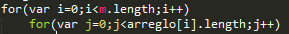

Creacion
- Vacios
- var arreglo = new Array();
- var arreglo = [];
- Con elementos (no utiliza new)
- var arreglo = Array('hola',123,true);
- var arreglo = ['hola',123,true];
- Vacios
Acceso
- Similar a otros lenguajes
- var x = arreglo[0];
- arreglo[0] = 'mundo'
- Al contrario de otros lenguajes, no daria un error, sino que le agregaria al arreglo todos los elementos que le faltan
- arreglo[10]=3456;
- 'undefined' Valor regresado cuando es un valor no valido o que excede del arreglo
- Similar a otros lenguajes
Propiedades e Iteracion
length
Caracteristicas particulares
- Heterogeneos
- Jagged (dentado)
Metodos
- concat()
- Une un arreglo con otros
- join(<separador>)
- une todos los elementos de un arreglo en una cadena, el separador es opcional
- push()
- Agrega un elmento al final del arrelgo
- pop()
- Eliminar el ultimo elemento del arreglo
- reverse()
- Regresa un arreglo con los elementos en orden invertido
- sort(<criterio>)
- Ordena los elementos de manera ascendente tratandolos como cadenas.
Se puede agregar una funcion de criterio - shift()
- Elimina del inicio
- unshift()
- Inserta al inicio
- splice()
- agregar o eliminar
- slice()
- extrae un subarreglo
- indexOf()
- posicion del elemento en el arreglo
- forEach(<funcion (elemento, indice, arreglo){}>)